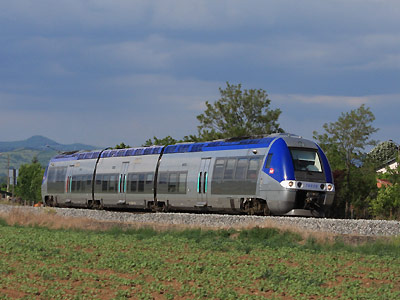
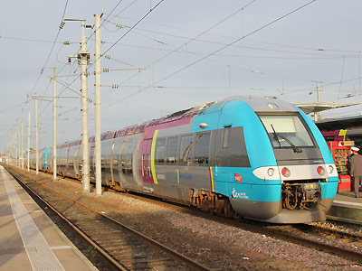
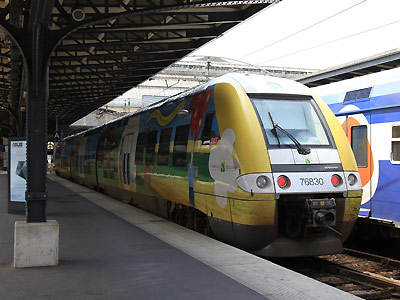
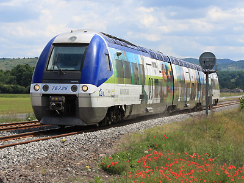
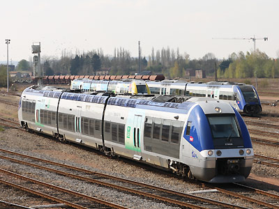
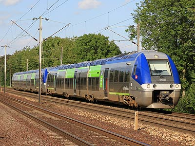
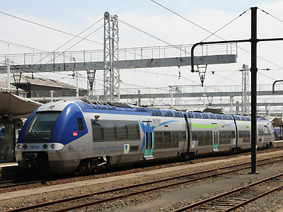
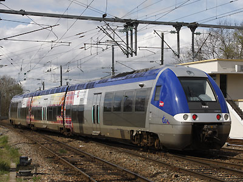
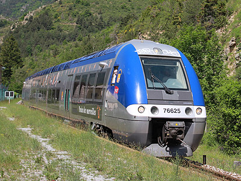

Ferrovia - 03 Juin 2012
X 76500 - XGC
Autorails à Grande Capacité, version automoteur Diesel pur de la famille des AGC.
Quelques données techniques
Constructeur : Bombardier
Pour plus d'info :
La fiche X 76500 sur Wikipedia
L'inventaire des X 76500 sur Trains du Sud-Ouest

L'X 76820 au Breuil sur Couze (22/05/2011)

L'X 76812 Pays de la Loire à Nantes (03/04/2011)

L'X 76830 Champagne Ardennes à Paris-Est (31/05/2012)

L'X 76726 Auvergne pelliculé au Breuil sur Couze (22/05/2011)

L'X 76628 Picardie à Laon (16/04/2010)

La livrée Picardie évolue. L'X 76539 passe aux Noues (30/07/2011)

L'X 76542 Basse Normandie au Mans (10/07/2010)

L'X 76680/79 Franche-Comté à Mouchard (13/04/2008)

L'X 76625/26 "Vallée des Merveilles" (09/06/2014)